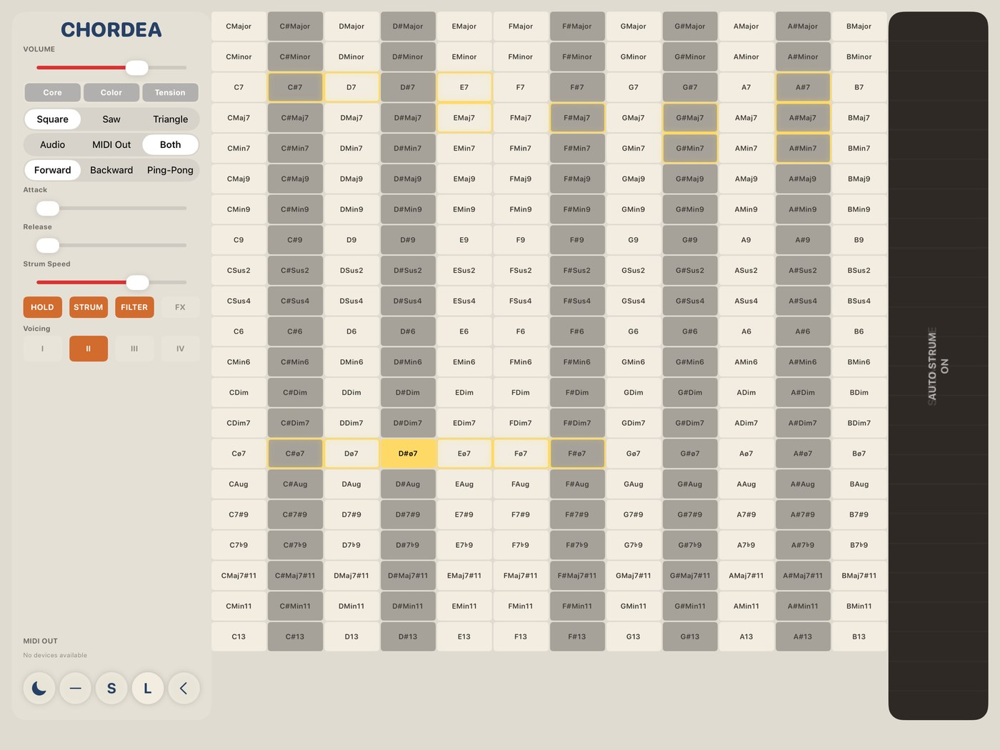

12 bit sauce filter Aura enhancement turn on aura and experience magic. AU · VST3 · Standalone · macOS · Windows Try F(ilter)12 $49 · includes DRUGS free
bus compressor Make everything better one knob, impossible sauce. AU · VST3 · Standalone · macOS · Windows Try DRUGS Pay what you want · $5 minimum
 Chordea midi chord controller The idea machine touch some chords. get some ideas. iPad · iPadOS 16 · USB MIDI Try CHORDEA $9.99 · app store